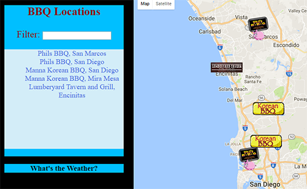

Udacity Project - Neighborhood Map
The Neighborhood Map project is a single page, responsive web application that displays a list of locations through Google Maps API. Users can filter the locations and find specific information on each one. Makes use of OpenWeatherMap and Yelp API. Github.